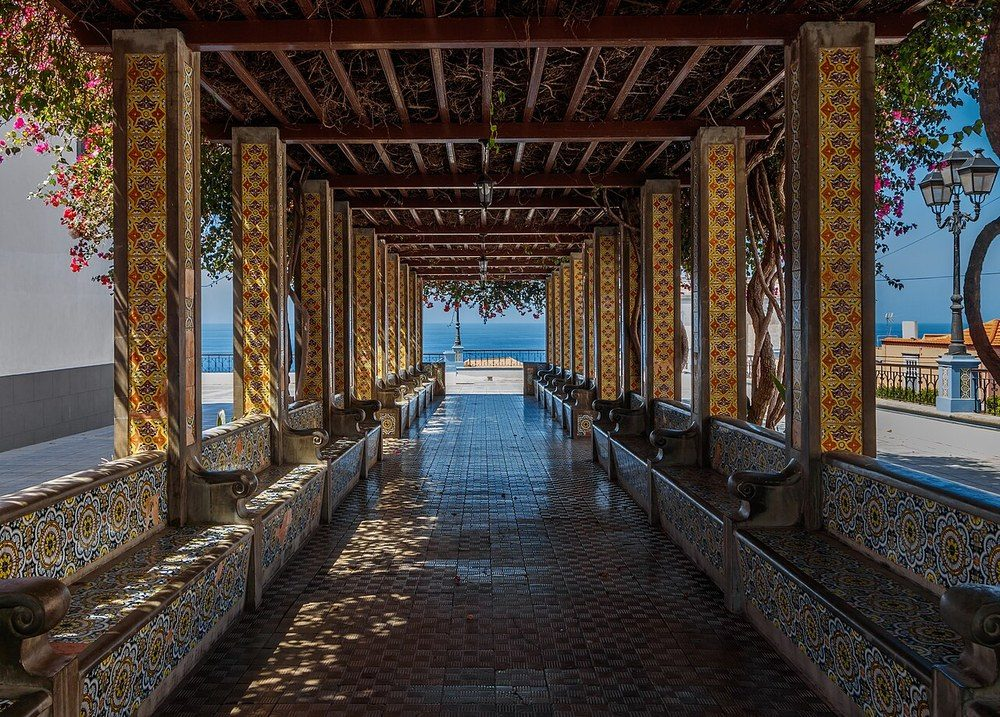

퍼걸러 (Pergola)
검수 완료

쉽게 풀면
공원이나 정원에서 나무 기둥 여러 개가 격자 모양 지붕을 받치고 있는 구조물을 본 적이 있을 것이다. 이것이 퍼걸러이다. 완전히 막힌 지붕이 아니라 살짝 뚫린 격자 구조라서 햇빛을 적당히 걸러주면서도 시원한 그늘을 만들어준다. 여기에 등나무 같은 덩굴식물을 올려 자라게 하면 자연스러운 초록 지붕이 만들어지기도 한다.
왜 중요한가
퍼걸러는 휴게공간에 그늘과 경관적 요소를 동시에 제공하는 대표적인 옥외시설물로, 조경 설계에서 공간의 성격을 규정하고 이용자의 체류를 유도하는 요소로 자주 다뤄진다. 재료, 형태, 배치에 따라 공간의 분위기가 크게 달라지기 때문에 설계적 연구 대상이 된다. 퍼걸러는 구조물 자체의 형태만으로 공간의 진입부나 시선의 종착점을 만들어내는 경관 요소로도 활용되어, 동선 유도와 공간 위계 형성이라는 설계적 기능을 함께 수행한다.
어디에 있고 어떻게 생겼나
- 퍼걸러는 수직 기둥이 가로보와 튼튼한 열린 격자를 받치고, 흔히 그 위에 목본 덩굴식물을 올리는 정원 구조물이다. 그늘진 산책로, 통로, 앉는 자리를 이룬다. 어원은 튀어나온 처마를 뜻하는 후기 라틴어 pergula이다.
- 건물의 연장이나 열린 테라스의 보호물, 별채 사이를 잇는 통로가 될 수도 있다.
- 퍼걸러, 보어(bower), 아버(arbor)는 맥락에 따라 섞어 쓴다. 아버는 지붕 있는 나무 벤치나 격자로 둘러싼 틀이며, 퍼걸러는 훨씬 크고 열린 구조로 보통 일체형 좌석이 없다.
- 정원이 아닌 건축·토목 구조물에도 쓰인다. 캘리포니아 고속철도는 도로나 다른 선로를 얕은 각도로 가로지르는 구간에서 안내 궤도를 받치는 큰 콘크리트 퍼걸러를 쓴다.
맡은 기능
- 건물 문에서 고립된 테라스나 수영장 같은 열린 정원 시설로 이어지거나 건물에서 떨어져 선 독립형으로 만든다. 독립형은 바람과 가벼운 햇빛은 들이면서 강한 직사광선은 막는 앉는 자리를 준다.
- 덩굴식물이 자랄 틀을 제공한다.
- 1498년 레오나르도 다 빈치가 밀라노 스포르체스코 성의 방 천장을 열여섯 그루 뽕나무 가지가 얽힌 퍼걸러 속에 있는 것처럼 꾸몄다.
- 중세 후기·르네상스 정원의 녹색 터널은 버드나무나 개암나무의 어린 가지를 아치 모양으로 묶고 얇은 널에 덩굴을 올린 것으로 퍼걸러보다 덜 영구적이다.
연구에서 다루는 방식
- 트렐리스(격자 구조물)는 나무·대나무·금속 조각을 엮은 열린 틀로 덩굴식물을 받치고 보여 주는 구조물이다. 기둥과 가로보로 그늘진 통로나 앉는 자리를 만드는 퍼걸러와 구분해 쓴다.
- 논문에는 구조 재료(목재, 석재, 콘크리트), 지붕 격자의 간격과 방향, 올린 식물 종류를 적는다.
- 역사: 퍼걸러는 인공적인 성격 때문에 18~19세기 자연주의 정원 양식에서는 인기를 잃었다. 19세기 말~20세기 초 에드윈 루티언스와 거트루드 지킬이 설계한 정원에서는 벽돌과 석재 기둥에 강한 가로보를 얹은 퍼걸러가 특징이었다.
- 폴란드 브로츠와프의 퍼걸러는 1911년에 설계되었고 2006년 유네스코 세계유산이 되었다.
논문에서는 이렇게 쓰입니다
실제 논문에서
국내 학술지 논문에서 이 용어가 쓰인 문장을 그대로 옮겼다. 제목·학술지·연도와 원문 링크를 함께 적었다.
“프로토타입 개발을 위하여 기 조성된 소공원을 대상으로 도면별 주석과 유형을 분석하여 조경 템플릿 구성요소를 도출하였으며 이를 기반으로 놀이시설물, 파고라, 벤치 등을 패밀리(family) 및 템플릿으로 제작하여 자동화 설계를 가능하게 하였다.”
소공원의 조경설계를 위한 BIM 템플릿 개발, 한국조경학회지, 2016 · KCI 한국학술지인용색인 · 원문 보기 ↗
“전통형 퍼걸러는 1990년대에36개로 가장 높았으나 2000년대 21개로 축소되었으며 2010년대에 이르러 광고에서 전통형 퍼걸러가 사라졌다.”
조경잡지의 광고로 살펴 본 퍼걸러 디자인의 유형변화 연구, 한국경관학회지, 2021 · KCI 한국학술지인용색인 · 원문 보기 ↗
예시 문장
아래 예문은 용어의 쓰임을 보이려고 만든 것으로, 실제 논문 문장이 아니다.
퍼걸러의 방향이 그늘 형성에 미치는 영향을 분석하는 문맥이다.
퍼걸러가 이용자 체류 행태에 미치는 영향을 다루는 문맥이다.
조금 더 깊게 보면
퍼걸러는 목재, 금속, 콘크리트 등 다양한 재료로 제작되며, 덩굴식물 유인용 구조물로 활용될 때는 식물의 생장 특성을 고려한 구조 설계가 필요하다. 차양막이나 캐노피와 결합해 그늘 효과를 강화하는 형태도 함께 연구된다. 기둥 간격과 보의 높이, 격자 부재의 밀도는 그늘의 농도와 통풍량을 동시에 좌우하는 설계 변수로 다뤄지며, 계절에 따른 태양의 고도 변화를 고려해 배치 방향을 조정하는 경우도 있다. 덩굴식물을 유인할 때는 낙엽성 수종을 선택하면 여름에는 그늘을, 겨울에는 채광을 확보할 수 있다는 점이 함께 고려된다. 기둥 하부의 마감과 배수 처리가 부실하면 지면과 맞닿는 부분부터 부식이 시작되는 경우가 많아, 기초 상세와 방부 처리가 설계 단계에서 함께 검토된다.
주의할 점
퍼걸러는 격자 구조 특성상 완전한 차광은 어려워, 강한 직사광선을 막는 용도로는 한계가 있을 수 있다. 덩굴식물을 올릴 경우 구조물의 하중 설계와 지속적인 전정 관리가 함께 고려되어야 한다.
목재 퍼걸러는 접합부에 빗물이 고이기 쉬워 부식과 하자가 시작되는 지점이 되는 경우가 많아, 상세 설계 단계에서 배수 처리가 함께 검토되어야 한다.
참고 문헌
- Wikipedia contributors. (n.d.). Pergola. Wikipedia.
- Wikipedia contributors. (n.d.). Trellis. Wikipedia.